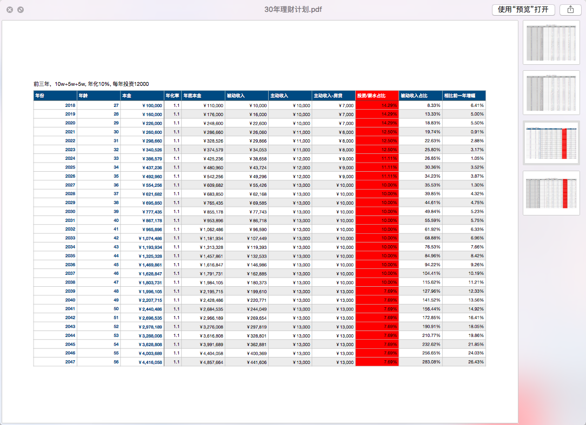

程序员的理财（养老）计划
个人理财的背景
2013年底，在爸妈资助下，在成都软件园旁贷款买房，当时刚毕业，贷款50万，也没想过以后的还贷压力，就觉得现在还还完贷，还能剩下一些钱，随着工资上涨，生活应该会越来越好。
现在2017年8月，陪同事去看房，发现软件园周围翻了一倍以上，还在持续上涨。想起当时刚毕业的自己，想要靠自己，慢慢挣钱全款买房，现在想想也挺有意思的。
其实仔细算算，贷款50万，25年付清；商贷当时6.1%的利息，这就意味着40万的利息，25年内每个月的还贷钱里面差不多一半是在付银行的利息，心里还是觉得掉坑里面了。
所以才想到要去理财。
参考书籍《富爸爸穷爸爸》《经济学原理》
首先看了一些个人理财的书，里面讲了一些简单的概念，使人茅塞顿开。
理解了最基本的资产与负债的概念
大学教会了我们赚钱的技能，却没有教会我们更重要的，如何去管理自己的钱。
想想平时在公司上班，努力上班，朝9晚9，拿到的辛苦钱，在薪水到手前，政府已经提前分去一部分税，越努力的加班，给政府交的税越多，心里更不是滋味了。
在大多数人的消费理念里面，现在透支未来的收入，各种贷款买房，买车。
国家老龄化加剧，人口红利消失，鼓励二胎，让你去换更大的房子，更多的贷款。
同时我们也掉入了经济学家设好的游戏规则里面，我们只能拼命挣钱，推动着这个车轮前进。
当然现阶段更多的是无奈，随即想到的就是反抗，如何才能跳出这个怪圈，学习->实践，希望能早日实现财务自由吧！
买房穷三年
买房穷三年，还贷，攒装修钱，家具家电；穷完三年来到2017年，今年有闲钱了，考虑将钱利用起来
72法则：翻倍时间
72/年化率 = 翻倍时间
115法则 翻三倍时间
115/年化率 = 翻三倍时间
投资方式
- 投资自己
- 余额宝
- 股票
- 基金
- P2P
投资自己：现在在一家中小型创业公司，写PHP，工资&福利都不高，在成都很容易摸到天花板，有考虑过继续重操旧业Java，有考虑过在职研究生或者英语上面纵向提升，在30岁之前，给自己一块好的敲门砖，争取去到一个稳定的，待遇&福利都不错的公司。
余额宝已经跌破4%,限额10w，跑不赢通货膨胀（5%+）。果断放弃。
股票在没系统学习之前，不考虑上车
基金学习中，基金分很多种，股票，货币，债券，指数基金等等。巴菲特也在公开场合建议普通人投资指数基金，在长期来看是上升趋势。会进一步了解。
P2P互联网金融，平台良莠不齐，大平台利率较低：6%～10%（一万块钱，一年600～1000）， 小平台利率稍高：10%～15%（一万块钱一年1000～1500）。
上班好好工作，下班好好理财
最开始投资的网贷，找大平台，年化率高的新手标，薅大平台的羊毛，慢慢也学会去看平台，是信贷or资产抵押贷款，汽车质押or汽车抵押，银行存管or第三方担保等等。
网贷利率也会越来越低，但是给自己一个目标吧！不断寻找年化10%的投资洼地进行投资！
推荐一个人人贷
推荐一个团贷网
推荐一个知乎公众号：海椒妞的网贷日记
30年理财（养老）计划

危机感
IT行业，大公司也会对一部分40岁以上的员工进行裁减，如果没有保证核心竞争力，这个行业绝不是铁饭碗，也会面临就业风险。
所以也请每个IT行业的从业者想一想自己的核心竞争力是什么，只有拥有这个才能让自己立于不败之地。
所以也是为什么要提高自己的被动收入，在什么年龄阶段拥有多少比例的被动收入。
希望一起努力，早日实现自己的财务自由！